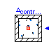
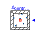
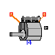
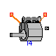
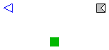
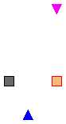

 


SimpleCar.Engine.Components.Reservoir

This infinite reservoir model is capable of supplying any amount of mass or energy (via the mdot and q flow variables on the Gas connector) to sustain a specified temperature and pressure. These "infinite" models are interesting because instead of including constitutive relationships between flow values (mass flow and power) and the potentials of the system (pressure and temperature), they instead provide algebraic constraints involving only the states. It is assumed that the flows will be calculated such that the constraints will be satisfied. This kind of model is analagous to an ideal voltage source (supplies as much current as is necessary to sustain a specified voltage) or a mechanical ground (supplies as much force as is necessary to sustain a specified position).
| Name | Default | Description |
|---|---|---|
| P | 101800 | Reservoir pressure [Pa] |
| T | 300 | Reservoir temperature [K] |
model Reservoir "Infinite reservoir"
parameter Modelica.SIunits.Pressure P=101800 "Reservoir pressure";
parameter Modelica.SIunits.Temperature T=300
"Reservoir temperature";
Interfaces.Gas tap;
equation
tap.P = P;
tap.T = T;
end Reservoir;
SimpleCar.Engine.Components.IndividualCylinder

All the basic componets of a single cylinder, 2-valve engine have been compiled in this model.
| Name | Default | Description |
|---|---|---|
| spark_advance | Spark advance [deg] | |
| burn_duration | Burn Duration [deg] | |
| evo | 40 | Exhaust Valve Opening [deg] |
| ivo | 150 | Intake Valve Opening [deg] |
| evc | 205 | Exhaust Valve Closing [deg] |
| ivc | 310 | Intake Valve Closing [deg] |
| crank_shift | 0 | Crankshaft Shift [deg] |
| ivd | 0.032 | Intake Valve Diameter [m] |
| evd | 0.028 | Exhaust Valve Diameter [m] |
model IndividualCylinder
"Collection of parts for a complete individual cylinder"
extends Interfaces.Cylinder;
parameter Types.Degrees spark_advance "Spark advance";
parameter Types.Degrees burn_duration "Burn Duration";
parameter Types.Degrees evo=40 "Exhaust Valve Opening";
parameter Types.Degrees ivo=150 "Intake Valve Opening";
parameter Types.Degrees evc=205 "Exhaust Valve Closing";
parameter Types.Degrees ivc=310 "Intake Valve Closing";
parameter Types.Degrees crank_shift=0 "Crankshaft Shift";
parameter Modelica.SIunits.Diameter ivd=0.032
"Intake Valve Diameter";
parameter Modelica.SIunits.Diameter evd=0.028
"Exhaust Valve Diameter";
Engine.Components.MasslessPiston piston;
Engine.Components.CrankSlider crankslider;
Engine.Components.ControlVolume combustion_chamber;
Engine.Components.Valve intake_valve(dia=ivd);
Engine.Components.Valve exhaust_valve(dia=evd);
Engine.Components.TimingBelt timing_belt;
Engine.Components.Cam intake_cam(vo=ivo, vc=ivc);
Engine.Components.Cam exhaust_cam(vo=evo, vc=evc);
Engine.Components.Combustion combustion_model(burn_duration=burn_duration
);
Engine.Components.SparkControl spark_control(spark_advance=spark_advance)
;
Engine.Components.ChamberVolume chamber_volume;
OffsetShaft offset_shaft(shift=crank_shift);
equation
connect(crankslider.geom, geom);
connect(chamber_volume.geom, geom);
connect(intake_valve.a, intake);
connect(exhaust_valve.a, exhaust);
connect(piston.chamber, combustion_chamber.state);
connect(intake_cam.valve_lift, intake_valve.lift);
connect(exhaust_cam.valve_lift, exhaust_valve.lift);
connect(intake_cam.camshaft, timing_belt.camshaft);
connect(exhaust_cam.camshaft, timing_belt.camshaft);
connect(intake_valve.b, combustion_chamber.state);
connect(combustion_chamber.state, exhaust_valve.b);
connect(combustion_model.cylinder, combustion_chamber.state);
connect(combustion_model.crank, spark_control.crank);
connect(spark_control.spark, combustion_model.start);
connect(chamber_volume.volume, combustion_chamber.volume);
connect(combustion_chamber.mass, combustion_model.mass);
connect(piston.geom, geom);
connect(piston.piston, crankslider.piston);
connect(chamber_volume.piston, crankslider.piston);
connect(offset_shaft.cyl, crankslider.crank);
connect(offset_shaft.crank, crankshaft);
connect(timing_belt.crankshaft, crankslider.crank);
connect(spark_control.crank, crankslider.crank);
end IndividualCylinder;
SimpleCar.Engine.Components.Dynamometer

This dynamometer model is ideal. This means that the dynamometer appear (to anything connected to it) to have an infinite mass. It is important that the input signal is continuous. Furthermore the input signal has units of "revolutions per minute".
| Name | Default | Description |
|---|---|---|
| cycle_fraction | 1.0 | Average over what fraction of the cycle |
model Dynamometer "Ideal Dynamometer"
parameter Real cycle_fraction=1.0
"Average over what fraction of the cycle";
Modelica.SIunits.Energy work;
Modelica.SIunits.Energy last_work;
Modelica.SIunits.Torque avg_tau;
Modelica.SIunits.Angle next_rotation;
Types.RPM avg_rpm;
Modelica.SIunits.Time previous_time;
Modelica.Blocks.Interfaces.InPort rpm(final n=1);
Modelica.Mechanics.Rotational.Interfaces.Flange_a shaft;
equation
der(shaft.phi) = rpm.signal[1]*Modelica.Constants.pi/30;
der(work) = shaft.tau*der(shaft.phi);
algorithm
when initial() then
next_rotation := shaft.phi + cycle_fraction*4*Modelica.Constants.pi;
last_work := 0;
previous_time := time;
avg_rpm := rpm.signal[1];
end when;
when shaft.phi > next_rotation then
next_rotation := next_rotation + cycle_fraction*4*Modelica.Constants.pi;
avg_tau := (work - pre(last_work))/(cycle_fraction*4*Modelica.Constants.pi
);
avg_rpm := 120*cycle_fraction/(time - pre(previous_time));
last_work := work;
previous_time := time;
end when;
end Dynamometer;

An assembly of components required for an I4 engine. This model requires a connection to intake and exhaust gases, the crankshaft and geometry information.
| Name | Default | Description |
|---|---|---|
| spark_advance | Spark advance [deg] | |
| burn_duration | Burn Duration [deg] | |
| evo | 40 | Exhaust Valve Opening [deg] |
| ivo | 150 | Intake Valve Opening [deg] |
| evc | 205 | Exhaust Valve Closing [deg] |
| ivc | 310 | Intake Valve Closing [deg] |
| ivd | 0.032 | Intake Valve Diameter [m] |
| evd | 0.028 | Exhaust Valve Diameter [m] |
model I4_Engine "An Inline 4 Cylinder Engine"
extends Interfaces.Engine;
parameter Types.Degrees spark_advance "Spark advance";
parameter Types.Degrees burn_duration "Burn Duration";
parameter Types.Degrees evo=40 "Exhaust Valve Opening";
parameter Types.Degrees ivo=150 "Intake Valve Opening";
parameter Types.Degrees evc=205 "Exhaust Valve Closing";
parameter Types.Degrees ivc=310 "Intake Valve Closing";
parameter Modelica.SIunits.Diameter ivd=0.032
"Intake Valve Diameter";
parameter Modelica.SIunits.Diameter evd=0.028
"Exhaust Valve Diameter";
Modelica.SIunits.Power power "Instantaneous engine power output";
replaceable model CylinderType = IndividualCylinder extends
Interfaces.Cylinder;
CylinderType cylinder1(
crank_shift=0,
spark_advance=spark_advance,
burn_duration=burn_duration,
evo=evo,
ivo=ivo,
evc=evc,
ivc=ivc,
ivd=ivd,
evd=evd);
CylinderType cylinder2(
crank_shift=360,
spark_advance=spark_advance,
burn_duration=burn_duration,
evo=evo,
ivo=ivo,
evc=evc,
ivc=ivc,
ivd=ivd,
evd=evd);
CylinderType cylinder3(
crank_shift=540,
spark_advance=spark_advance,
burn_duration=burn_duration,
evo=evo,
ivo=ivo,
evc=evc,
ivc=ivc,
ivd=ivd,
evd=evd);
CylinderType cylinder4(
crank_shift=180,
spark_advance=spark_advance,
burn_duration=burn_duration,
evo=evo,
ivo=ivo,
evc=evc,
ivc=ivc,
ivd=ivd,
evd=evd);
Modelica.Mechanics.Rotational.Inertia crankshaft_inertia(J=0.03, w(start=
157));
equation
connect(cylinder1.intake, intake);
connect(cylinder3.intake, intake);
connect(cylinder2.intake, intake);
connect(cylinder4.intake, intake);
connect(cylinder1.exhaust, exhaust);
connect(cylinder4.exhaust, exhaust);
connect(cylinder3.exhaust, exhaust);
connect(cylinder2.exhaust, exhaust);
connect(cylinder4.geom, engine_geometry);
connect(cylinder2.geom, engine_geometry);
connect(cylinder3.geom, engine_geometry);
connect(cylinder1.geom, engine_geometry);
connect(cylinder1.crankshaft, cylinder3.crankshaft);
connect(cylinder2.crankshaft, cylinder3.crankshaft);
connect(cylinder4.crankshaft, cylinder2.crankshaft);
connect(crankshaft_inertia.flange_b, cylinder1.crankshaft);
connect(crankshaft_inertia.flange_a, crankshaft);
power = crankshaft.tau*der(crankshaft.phi);
end I4_Engine;
SimpleCar.Engine.Components.Manifold

This very simple model contains a throttle and a control volume which can be connected to the intake system of an engine (or cylinder) in order to simulate the effects of manifold filling and emptying. A throttle position of 90 degrees corresponds to wide open throttle (WOT) while a throttle position of 0 degrees corresponds to a closed throttle.
| Name | Default | Description |
|---|---|---|
| volume | 0.004 | Manifold volume [m3] |
model Manifold "A simple filling-and-emptying manifold model"
parameter Modelica.SIunits.Volume volume=0.004 "Manifold volume";
Engine.Components.ControlVolume manifold_volume;
Modelica.Blocks.Sources.Constant volume_value(final k={volume});
Interfaces.Gas ambient;
Interfaces.Gas manifold;
Modelica.Blocks.Interfaces.InPort throttle_angle(final n=1);
Engine.Components.Throttle throttle(dia=0.10);
equation
connect(volume_value.outPort, manifold_volume.volume);
connect(manifold_volume.state, manifold);
connect(throttle.b, manifold_volume.state);
connect(throttle.a, ambient);
connect(throttle_angle, throttle.throttle_angle);
end Manifold;

This model contains the basic equations of a thermodynamic control volume. These include the conservation of mass and energy as well as the ideal gas law and gas property equations. The volume of the control volume is an input to this model and the current mass contained within the control volume is an output. The output signal for mass is necessary to connect a combustion model.
model ControlVolume "Thermodynamic control volume" protected Modelica.SIunits.Energy U(start=147) "Total energy"; Modelica.SIunits.Mass m(start=4e-4) "Total mass"; Modelica.SIunits.Pressure P(start=101800) = state.P "Pressure"; Modelica.SIunits.Temperature T(start=300) = state.T "Temperature"; Modelica.SIunits.MassFlowRate mdot=state.mdot "Net mass flow"; Modelica.SIunits.Power q=state.q "Net power"; Modelica.SIunits.Volume V=volume.signal[1] "Chamber volume"; Modelica.SIunits.AmountOfSubstance N "Number of moles of gas"; Real R=Modelica.Constants.R; Real logV; Real logP; public Modelica.Blocks.Interfaces.InPort volume(final n=1); public Modelica.Blocks.Interfaces.OutPort mass; public Interfaces.Gas state "Gas state"; protected PropertyModel props(T=T, P=P); equation // Compute number of moles N = m/props.mw; // Ideal gas low P*V = N*R*T; // First law of thermodynamics der(U) = q - P*der(V); U = m*props.u; // Conservation of mass der(m) = mdot; mass.signal[1] = m; logV = Modelica.Math.log(V); logP = Modelica.Math.log(P); end ControlVolume;
SimpleCar.Engine.Components.Valve

This is a very simple model of an engine valve the is derived from the "Orifice" model of isentropic flow. The valve model must be connected to two different gas volumes (or reservoirs). In addition, a translational connector is used to represent the lift of the valve.
| Name | Default | Description |
|---|---|---|
| dia | 0.012 | Valve diameter [m] |
| max_lift | 0.012 | Maximum Valve Lift [m] |
| max_discharge | 0.7 | Maximum Discharge Coefficient |
model Valve "Engine poppet valve"
parameter Modelica.SIunits.Diameter dia=0.012 "Valve diameter";
parameter Modelica.SIunits.Length max_lift=0.012
"Maximum Valve Lift";
parameter Real max_discharge=0.7 "Maximum Discharge Coefficient";
extends Orifice(final Aref=Modelica.Constants.PI*(dia/2)^2);
protected
parameter Real c_over_l=max_discharge/max_lift;
public
Modelica.Mechanics.Translational.Interfaces.Flange_a lift;
equation
lift.f = 0;
Cd = c_over_l*lift.s;
// Cd = 0.0;
end Valve;
SimpleCar.Engine.Components.Cam

This is an idealized cam model that computes a cam profile from the valve timing (opening and closing) and the maximum lift.
| Name | Default | Description |
|---|---|---|
| vo | 40 | Valve Open [deg] |
| vc | 205 | Valve Close [deg] |
| max_lift | 0.012 | Maximum valve lift [m] |
model Cam "Valvetrain cam"
parameter Types.Degrees vo=40 "Valve Open";
parameter Types.Degrees vc=205 "Valve Close";
parameter Modelica.SIunits.Length max_lift=0.012
"Maximum valve lift";
Types.Degrees local_ca "Local camshaft angle";
protected
parameter Real norm=1.0/(vc - vo);
public
Modelica.Mechanics.Rotational.Interfaces.Flange_a camshaft;
Modelica.Mechanics.Translational.Interfaces.Flange_a valve_lift;
equation
assert(vc > vo + 20, "Invalid cam timings");
camshaft.tau = 0;
valve_lift.s = if (local_ca < vo or local_ca > vc) then 0.0 else
max_lift*Modelica.Math.sin((local_ca - vo)*norm*Modelica.Constants.PI)^2;
local_ca = mod(camshaft.phi*180.0/Modelica.Constants.PI, 360);
end Cam;
SimpleCar.Engine.Components.PropertyModel
| Name | Default | Description |
|---|---|---|
| cp | 1039 | Specific heat capacity at constant pressure [J/(kg.K)] |
| mole_weight | 0.028964 | Molecular weight [kg/mol] |
replaceable model PropertyModel = GasProperties.SimpleAirProperties;
SimpleCar.Engine.Components.ChamberVolume
This model is used to compute the combustion chamber volume as a function of piston position. The has connectors for providing engine geometry characteristics and the piston position and computes the chamber volume as an output signal. Note that this model does not really interact with the piston because it does not result in any force being applied to the piston. It is important when creating models that are "read-only" for a given domain (e.g. the translational domain in the case of the piston position) that a zero contribution be provided for any flow variables.
model ChamberVolume "Computes combustion chamber volume as a function of piston position" Modelica.Mechanics.Translational.Interfaces.Flange_a piston; Modelica.Blocks.Interfaces.OutPort volume(final n=1); Interfaces.EngineGeometryRequired geom; equation volume.signal[1] = geom.Vc + geom.Ap*piston.s; piston.f = 0; end ChamberVolume;
SimpleCar.Engine.Components.Orifice

This is a base model for other models which model isentropic flow (e.g. throttles, engine valves)
| Name | Default | Description |
|---|---|---|
| Aref | Reference Area [m2] |
model Orifice "Isentropic flow restriction"
parameter Modelica.SIunits.Area Aref "Reference Area";
protected
Modelica.SIunits.MassFlowRate mdot "Flow from 'a' to 'b'";
Modelica.SIunits.SpecificEnthalpy h "Upstream enthalpy";
Modelica.SIunits.SpecificEnthalpy gamma "Upstream gamma";
Real pratio "Pressure ratio";
Real Cd "Discharge Coefficient";
public
Interfaces.Gas a;
Interfaces.Gas b;
protected
PropertyModel a_props(T=a.T, P=a.P);
PropertyModel b_props(T=b.T, P=b.P);
equation
a.mdot = mdot;
b.mdot = -mdot;
a.q = mdot*h;
b.q = -mdot*h;
if noEvent(a.P > b.P) then
h = a_props.h;
gamma = a_props.gamma;
pratio = b.P/a.P;
if (pratio <= (2.0/(gamma + 1.0))^(gamma/(gamma - 1.0))) then
mdot = Cd*Aref*a.P/((Modelica.Constants.R/a_props.mw)*a.T)^0.5*gamma^0.5
*(2.0/(gamma + 1.0))^((gamma + 1.0)/(2.0*(gamma - 1.0)));
else
mdot = Cd*Aref*a.P/((Modelica.Constants.R/a_props.mw)*a.T)^0.5*pratio^(
1.0/gamma)*(2.0*gamma/(gamma - 1.0)*(1.0 - pratio^((gamma - 1.0)/gamma)
))^0.5;
end if;
else
h = b_props.h;
gamma = b_props.gamma;
pratio = a.P/b.P;
if (pratio <= (2.0/(gamma + 1.0))^(gamma/(gamma - 1.0))) then
mdot = -Cd*Aref*b.P/((Modelica.Constants.R/b_props.mw)*b.T)^0.5*gamma^
0.5*(2.0/(gamma + 1.0))^((gamma + 1.0)/(2.0*(gamma - 1.0)));
else
mdot = -Cd*Aref*b.P/((Modelica.Constants.R/b_props.mw)*b.T)^0.5*pratio^(
1.0/gamma)*(2.0*gamma/(gamma - 1.0)*(1.0 - pratio^((gamma - 1.0)/gamma)
))^0.5;
end if;
end if;
end Orifice;
SimpleCar.Engine.Components.Throttle

A very simple engine throttle. The input signal is the throttle angle.
| Name | Default | Description |
|---|---|---|
| dia | 0.1 | Throttle diameter [m] |
model Throttle "Orifice with throttle plate"
parameter Modelica.SIunits.Diameter dia=0.1 "Throttle diameter";
extends Orifice(final Aref=Modelica.Constants.PI*(dia/2)^2);
Modelica.Blocks.Interfaces.InPort throttle_angle(final n=1)
"Throttle Angle [deg]";
equation
Cd = Modelica.Math.sin(throttle_angle.signal[1]*Modelica.Constants.PI/180)^2
;
end Throttle;
SimpleCar.Engine.Components.MasslessPiston

This piston is used to translate pressure inside the cylinder into force (presumably applied to the crank slider mechanism). This piston has no mass.
| Name | Default | Description |
|---|---|---|
| Pcc | 101800 | Crankcase pressure [Pa] |
model MasslessPiston "A massless piston"
parameter Modelica.SIunits.Pressure Pcc=101800
"Crankcase pressure";
Interfaces.EngineGeometryRequired geom;
Interfaces.Gas chamber;
Modelica.Mechanics.Translational.Interfaces.Flange_a piston;
equation
piston.f = geom.Ap*(chamber.P - Pcc);
chamber.mdot = 0;
chamber.q = 0;
end MasslessPiston;
SimpleCar.Engine.Components.OffsetShaft

Each cylinder is shifted on that crank shaft. This model enforces an angular displacement from one flange to another so that each cylinder can be rigidly connected to the crankshaft by independently shifted.
| Name | Default | Description |
|---|---|---|
| shift | 0 | Shift from crankshaft [deg] |
model OffsetShaft "Angular displacement" parameter Types.Degrees shift=0 "Shift from crankshaft"; Types.RPM shaft_speed; Modelica.Mechanics.Rotational.Interfaces.Flange_a crank; Modelica.Mechanics.Rotational.Interfaces.Flange_b cyl; equation shaft_speed = 30*der(crank.phi)/Modelica.Constants.pi; crank.tau + cyl.tau = 0; cyl.phi = crank.phi + shift*Modelica.Constants.PI/180.0; end OffsetShaft;
SimpleCar.Engine.Components.CrankSlider

This model represents the crank slider mechanism used to turn translational force into the rotational torque applied to the crankshaft.
model CrankSlider "A crank slider mechanism"
protected
Modelica.SIunits.Length d;
Modelica.SIunits.Angle phi;
Real cp;
Real sp;
public
Interfaces.EngineGeometryRequired geom;
Modelica.Mechanics.Rotational.Interfaces.Flange_a crank;
Modelica.Mechanics.Translational.Interfaces.Flange_a piston;
equation
assert(geom.conrod > geom.crank,
"Connecting rod length greater than crank length");
cp = Modelica.Math.cos(phi);
sp = Modelica.Math.sin(phi);
phi = crank.phi;
d = sqrt(geom.conrod^2 - (geom.crank*sp)^2);
piston.s = (geom.crank + geom.conrod) - (geom.crank*cp + sqrt(geom.conrod^2
- geom.crank^2*sp^2));
crank.tau = piston.f*(sp*geom.crank + cp*sp*geom.crank^2/sqrt(d));
end CrankSlider;
SimpleCar.Engine.Components.SparkControl

This model triggers the firing of the spark plug when the piston reaches a prescribed number of degrees before top dead center of the compression/combustion strokes. A real spark control strategy would allow the spark strategy to change as engine conditions changed but this model just assumes a fixed "spark advance".
| Name | Default | Description |
|---|---|---|
| spark_advance | 20 | Before top-dead-center (TDC) [deg] |
model SparkControl "Spark plug control"
parameter Types.Degrees spark_advance=20
"Before top-dead-center (TDC)";
protected
Types.Degrees cur_pos;
Types.Degrees next_spark;
public
Modelica.Blocks.Interfaces.BooleanOutPort spark;
Modelica.Mechanics.Rotational.Interfaces.Flange_a crank;
equation
crank.tau = 0;
cur_pos = crank.phi*180/Modelica.Constants.PI;
algorithm
when initial() then
next_spark := -spark_advance;
while (next_spark < cur_pos) loop
next_spark := next_spark + 720;
end while;
end when;
spark.signal[1] := cur_pos > next_spark;
when spark.signal[1] then
next_spark := next_spark + 720;
end when;
end SparkControl;
SimpleCar.Engine.Components.TimingBelt

A timing belt that makes sure the camshaft spins at half the frequency as the crank shaft.
model TimingBelt "Engine timing belt" Modelica.Mechanics.Rotational.Interfaces.Flange_a crankshaft; Modelica.Mechanics.Rotational.Interfaces.Flange_b camshaft; equation 2*camshaft.phi = crankshaft.phi; camshaft.tau = 2*crankshaft.tau; end TimingBelt;
SimpleCar.Engine.Components.Combustion
This is a simplified combustion models. This model works by computing an instantaneous heat release (i.e. energy given off as a result of combustion) based on an idealized combustion transient. The duration of the burning is typically determined by the motion of the fuel/air mixture inside the cylinder but in the case of this model it is assumed that the burn duration is a fixed parameter.
| Name | Default | Description |
|---|---|---|
| lhv | 44e+6 | Lower heating value [J/kg] |
| afr | 14.6 | Stoichiometric Air/Fuel Ratio |
| burn_duration | 60 | Duration of combustion [deg] |
model Combustion "Simple combustion model"
parameter Modelica.SIunits.SpecificEnergy lhv=44e+6
"Lower heating value";
parameter Real afr=14.6 "Stoichiometric Air/Fuel Ratio";
parameter Types.Degrees burn_duration=60 "Duration of combustion";
protected
Modelica.SIunits.Energy amplitude;
Modelica.SIunits.AngularVelocity w;
Real dps;
Modelica.SIunits.Time start_burn(start=-1);
Modelica.SIunits.Time end_burn(start=-1);
Boolean burning(start=false);
Real tmp;
public
Interfaces.Gas cylinder;
Modelica.Blocks.Interfaces.InPort mass(final n=1);
Modelica.Blocks.Interfaces.BooleanInPort start(final n=1);
Modelica.Mechanics.Rotational.Interfaces.Flange_a crank;
equation
assert(burn_duration > 1, "Invalid burn duration");
cylinder.mdot = 0;
cylinder.q = if (burning) then -amplitude*Modelica.Math.sin((time -
start_burn)/(end_burn - start_burn)*Modelica.Constants.PI)^2 else 0.0;
der(tmp) = cylinder.q;
w = der(crank.phi);
dps = w*180/Modelica.Constants.PI;
crank.tau = 0;
algorithm
when start.signal[1] then
start_burn := time;
end_burn := time + (burn_duration/dps);
amplitude := lhv*(mass.signal[1]/(afr + 1))*2.0*dps/burn_duration;
burning := true;
end when;
when time >= end_burn then
burning := false;
end when;
end Combustion;
 SimpleCar.Engine.Components.I4_Engine.CylinderType
SimpleCar.Engine.Components.I4_Engine.CylinderType
| Name | Default | Description |
|---|---|---|
| spark_advance | Spark advance [deg] | |
| burn_duration | Burn Duration [deg] | |
| evo | 40 | Exhaust Valve Opening [deg] |
| ivo | 150 | Intake Valve Opening [deg] |
| evc | 205 | Exhaust Valve Closing [deg] |
| ivc | 310 | Intake Valve Closing [deg] |
| crank_shift | 0 | Crankshaft Shift [deg] |
| ivd | 0.032 | Intake Valve Diameter [m] |
| evd | 0.028 | Exhaust Valve Diameter [m] |
replaceable model CylinderType = IndividualCylinder extends Interfaces.Cylinder;